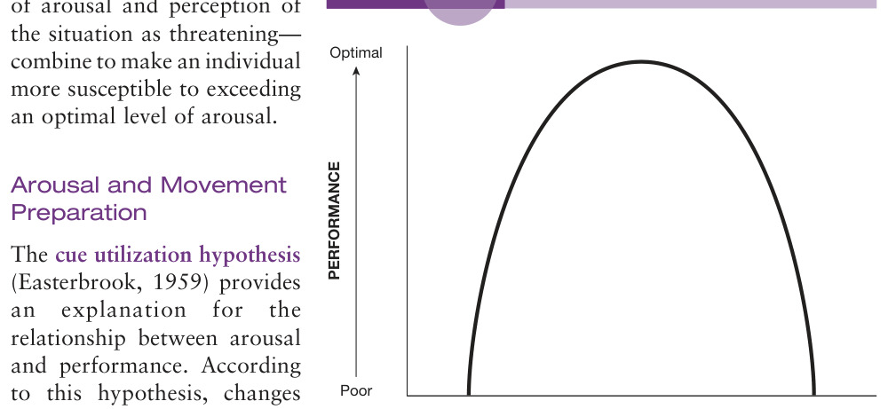
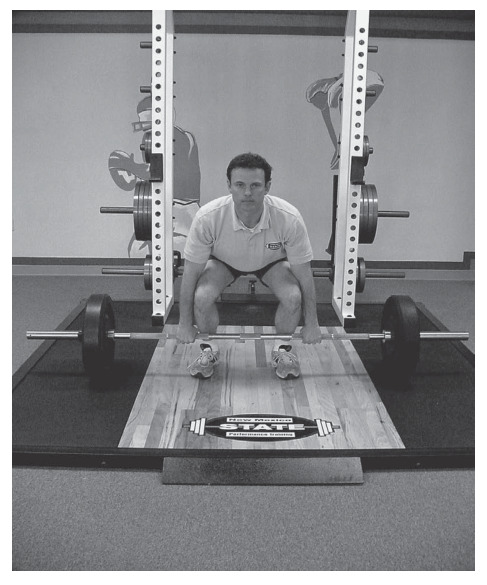
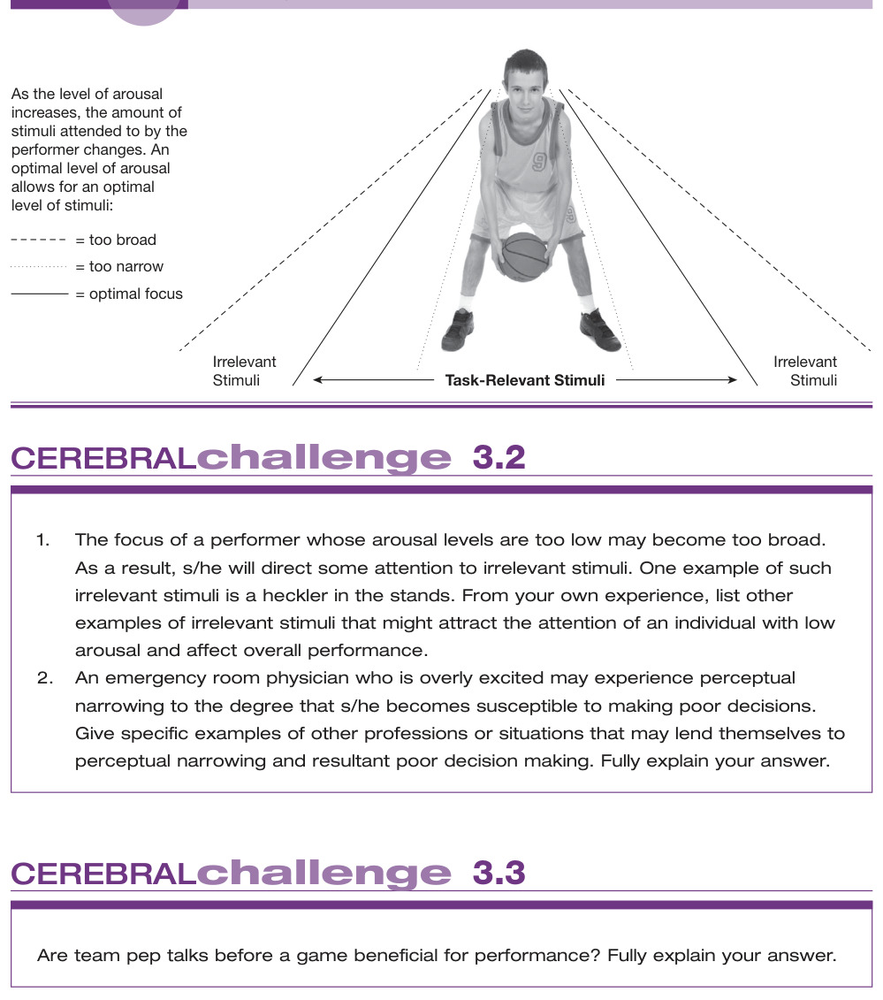
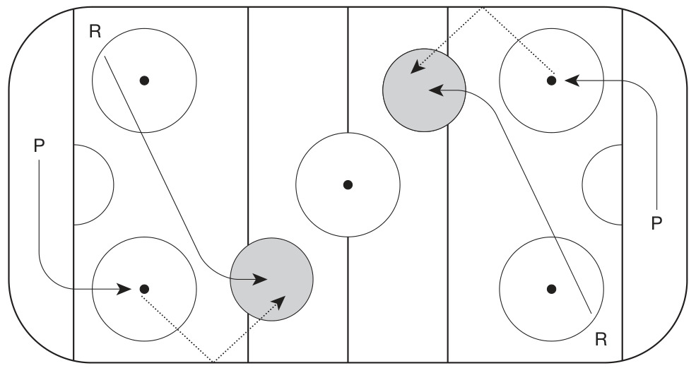

Chương 3 — Vai Trò Của Chú Ý, Hưng Phấn Và Tìm Kiếm Thị Giác Trong Chuẩn Bị Vận Động
Aaron đang trở nên bực bội. Anh ấy đã đi phục hồi chức năng để cải thiện chức năng bàn tay sau một tai nạn. Để giúp khôi phục kiểm soát vận động tinh, nhà trị liệu nghề nghiệp của anh đã giao cho anh nhiệm vụ tái tạo mẫu hình trên một tấm thẻ bằng cách lắp các chốt nhựa vào các lỗ trên bảng chốt. Cô ấy đã đưa cho anh hai tín hiệu cần tập trung trong khi thực hiện động tác, nhưng anh gặp khó khăn trong việc tập trung vì tiếng ồn nền trong phòng khám và nỗ lực cần thiết để di chuyển chốt vào đúng vị trí.
NĂNG LỰC CHÚ Ý
Như đã minh họa trong tình huống mở đầu, một cá nhân chỉ có thể chú ý hoặc xử lý một số lượng hoạt động hạn chế tại bất kỳ thời điểm nào. Khi vượt quá giới hạn này, sẽ xảy ra sự cạnh tranh về nguồn lực chú ý, và hệ quả của nó có thể bao gồm giảm tốc độ hoặc chất lượng thực hiện của một hay nhiều hoạt động, thậm chí là hoàn toàn bỏ qua một trong các hoạt động. Nói cách khác, theo quan niệm về năng lực chú ý hạn chế này, nhiều nhiệm vụ có thể được thực hiện thành công đồng thời, miễn là khi kết hợp lại, chúng không vượt quá nguồn lực chú ý sẵn có (Kahneman, 1973; Wickens, 1984). Ví dụ, nếu đi trên máy chạy bộ đòi hỏi 25 phần trăm tổng không gian chú ý sẵn có và đọc tạp chí đòi hỏi 50 phần trăm, thì tổng cộng 75 phần trăm vẫn nằm trong mức sẵn có, và người thực hiện có thể hoàn thành cả hai nhiệm vụ (Hình 3.1a). Giả sử có một nhiệm vụ khác được đưa vào, chẳng hạn như xem một bản tin truyền hình trên chiếc TV đối diện máy chạy bộ; khi kết hợp với việc đi trên máy chạy bộ và đọc tạp chí, nhiệm vụ này có thể đòi hỏi nhiều không gian chú ý hơn mức sẵn có. Trong tình huống này, sự nhiễu xảy ra: hoặc mức độ thực hiện của một hay nhiều nhiệm vụ suy giảm, hoặc một nhiệm vụ có thể bị bỏ hoàn toàn (Hình 3.1b). Để xem một ví dụ về điều có thể xảy ra khi năng lực chú ý bị vượt quá, hãy xem video Exceeding Attentional Capacity (Vượt quá năng lực chú ý) tại www.youtube.com/watch?v=m33q_ppUkfM.

Hình 3.1: Biểu diễn các yêu cầu chú ý trên nguồn lực chú ý sẵn có. (a) Hai nhiệm vụ — đọc tạp chí và đi trên máy chạy bộ — có thể được thực hiện đồng thời vì không vượt quá năng lực chú ý. (b) Sự kết hợp của ba nhiệm vụ (đọc tạp chí, đi trên máy chạy bộ và xem TV) đòi hỏi nhiều không gian chú ý hơn mức sẵn có; mức độ thực hiện của một hay nhiều nhiệm vụ sẽ suy giảm, hoặc một nhiệm vụ có thể bị bỏ qua.
Các Yếu Tố Ảnh Hưởng Đến Yêu Cầu Chú Ý
Làm phức tạp thêm vấn đề năng lực chú ý hạn chế là thực tế rằng yêu cầu chú ý của một nhiệm vụ nhất định và tác động của chúng lên người thực hiện không phải là không đổi. Người thực hành nên nhận thức rằng các đặc điểm của môi trường, của nhiệm vụ và của người học đều ảnh hưởng đến yêu cầu chú ý đặt lên người thực hiện. Những đặc điểm này có ý nghĩa quan trọng đối với việc thiết kế các trải nghiệm hướng dẫn.
GHI CHÚ NGHIÊN CỨU (RESEARCH NOTES)
Vào bất kỳ ngày nào, khi bạn trên đường đi làm hoặc đi học, có lẽ bạn đã nhận thấy những người lái xe đang tham gia vào các hoạt động có thể làm họ mất tập trung khỏi việc lái xe. Một trong những hoạt động đó là sử dụng điện thoại di động. Vì muốn hiểu rõ hơn về tác động của việc nói chuyện qua điện thoại khi lái xe, Strayer, Drews và Crouch (2006) đã tiến hành một nghiên cứu nhằm so sánh hiệu suất lái xe của một người lái đang dùng điện thoại với hiệu suất của một người lái say rượu. Nghiên cứu được thực hiện trong một môi trường phòng thí nghiệm được kiểm soát, sử dụng thiết bị mô phỏng lái xe. Với mô hình đi theo xe dẫn đầu, trong đó người tham gia lái xe trên một đường cao tốc nhiều làn theo sau một xe dẫn đầu có thể phanh bất ngờ, thí nghiệm đã xem xét các biến số như tốc độ lái, khoảng cách đi theo, thời gian va chạm và thời gian phanh. Kết quả cho thấy những người lái dùng điện thoại, bất kể họ đang nói qua điện thoại cầm tay hay điện thoại rảnh tay, đều có phản ứng phanh chậm hơn và gặp phải nhiều tai nạn giao thông hơn so với khi họ không dùng điện thoại. Ở chiều ngược lại, những người lái say rượu lái xe hung hăng hơn, bám sát xe trước hơn và đạp phanh mạnh hơn. Các tác giả của nghiên cứu kết luận rằng sự suy giảm do sử dụng điện thoại khi lái xe cũng nghiêm trọng như sự suy giảm liên quan đến việc lái xe say rượu. Một nghiên cứu khác, do Drews và cộng sự (2009) thực hiện, đã xem xét tác động của việc nhắn tin lên hiệu suất lái xe mô phỏng. Bốn mươi người trẻ tuổi (19–23 tuổi) đã thực hiện hai nhiệm vụ: chỉ lái xe (nhiệm vụ đơn) và vừa lái xe vừa nhắn tin (nhiệm vụ kép). Tương tự như phương pháp luận của nghiên cứu trước, người tham gia được hướng dẫn đi theo một xe dẫn đầu có thể phanh bất ngờ. Kết quả về hiệu suất lái xe cho thấy những người tham gia ở điều kiện vừa lái vừa nhắn tin phản ứng chậm hơn đáng kể khi đèn phanh của xe dẫn đầu bật sáng đột ngột, tăng đáng kể khoảng cách đi theo xe trước, có tần suất cao hơn các lần lệch làn không chủ ý và các chuyển động ngang sang làn khác, và gặp nhiều va chạm hơn so với những người ở điều kiện chỉ lái xe. Những phát hiện này cho thấy nguy cơ tai nạn đáng kể khi vừa nhắn tin vừa lái xe; theo các tác giả, nguy cơ này vượt quá nguy cơ của việc nói chuyện qua điện thoại khi lái xe.
CEREBRAL CHALLENGE 3.1 — Thử thách Trí não
- Hãy quan sát một người thực hiện một kỹ năng đóng và một người thực hiện một kỹ năng mở. Hãy mô tả những gì bạn quan sát được. Yêu cầu chú ý của hai người thực hiện khác nhau như thế nào?
- Để dạy một kỹ năng do bạn tự chọn, hãy giải thích cách bạn có thể thiết kế môi trường hướng dẫn nhằm giảm yêu cầu chú ý đặt lên người học.
Môi Trường Và Độ Phức Tạp Của Nhiệm Vụ
Khi môi trường hoặc nhiệm vụ trở nên phức tạp hơn, yêu cầu chú ý sẽ tăng tương ứng, làm giảm lượng không gian chú ý sẵn có cho các nhiệm vụ bổ sung. Ví dụ, trong trường hợp đọc tạp chí trong khi đi trên máy chạy bộ, có vẻ như vẫn có đủ không gian xử lý. Tuy nhiên, chính hai nhiệm vụ này có thể sẽ cản trở nhau nếu thay vì máy chạy bộ, người thực hiện đang đi trên một vỉa hè đông đúc. Người thực hành có thể muốn giảm độ phức tạp của môi trường hoặc nhiệm vụ để không vượt quá giới hạn chú ý, cho phép người học phân bổ các nguồn lực chú ý cần thiết cho nhiệm vụ đang được học. Ví dụ, đặt Aaron vào một môi trường không có yếu tố gây phân tán sẽ giúp anh tập trung vào nhiệm vụ trước mắt. Tương tự, một môi trường tối ưu cho người mới bắt đầu lái xe sẽ là một bãi đỗ xe rộng và vắng thay vì một con phố trong giờ cao điểm. Cũng theo cách đó, bằng cách loại bỏ các hậu vệ khi người học đang luyện các kỹ năng như cú lên rổ, dẫn bóng và các pha tấn công, huấn luyện viên bóng rổ có thể đảm bảo năng lực chú ý không có khả năng bị vượt quá.
Các chuyên gia lâm sàng cũng nên xem xét năng lực chú ý khi làm việc với bệnh nhân của mình. Ví dụ, nghiên cứu đã chỉ ra rằng yêu cầu chú ý đặt lên một cá nhân có thể thay đổi tùy theo loại dụng cụ hỗ trợ di chuyển đang được sử dụng và mức độ quen thuộc của bệnh nhân với dụng cụ đó (O'Sullivan, Schmitz, & Fulk, 2019). Dù cả khung tập đi kiểu nhấc lên thông thường lẫn khung tập đi có bánh xe đều đòi hỏi phân bổ chú ý trong khi sử dụng, khung tập đi có bánh xe được thấy là ít đòi hỏi chú ý hơn (Wright & Kemp, 1992). Trong những tình huống khác, các khiếm khuyết về chú ý có thể ảnh hưởng ngay cả đến các hoạt động nhiệm vụ kép tưởng chừng đơn giản, chẳng hạn như đi bộ trong khi cầm một cốc cà phê hoặc tham gia vào một cuộc trò chuyện. Thực tế, Shumway-Cook và Woollacott (2017) đã nói rằng “suy giảm chú ý là một yếu tố đáng kể góp phần gây mất ổn định và té ngã trong các điều kiện nhiệm vụ kép ở cả nhóm người cao tuổi lẫn nhóm có rối loạn thần kinh” (tr. 297). Hãy xem video tại https://www.youtube.com/watch?v=mjzHZHE83mc để thấy một bệnh nhân được yêu cầu thực hiện một nhiệm vụ nhận thức trong khi hoàn thành Bài kiểm tra Đứng đi và Đứng lại (Timed Up and Go Test, TUG).
GHI CHÚ NGHIÊN CỨU (RESEARCH NOTES)
Sử dụng kỹ năng chuyền bóng (set) trong bóng chuyền, Sibley và Etnier (2004) đã xem xét tác động của việc ra quyết định lên yêu cầu chú ý và hiệu suất nhiệm vụ. Hai mươi cầu thủ bóng chuyền trình độ trung bình đã tham gia nghiên cứu, trong đó sử dụng mô hình nhiệm vụ kép, theo đó người tham gia hoàn thành một nhiệm vụ chính và một nhiệm vụ phụ cả riêng lẫn đồng thời.
Nhiệm vụ chính trong công trình này là cú chuyền bóng, nhận bóng từ một cú ném dưới tay. Hướng chuyền được quyết định bởi màu bóng: bóng có sọc xanh–trắng báo hiệu chuyền ra sau, còn bóng trắng báo hiệu chuyền ra trước. Các cú chuyền được chấm điểm dựa trên độ chính xác khi bóng rơi qua một vòng cung đặt song song với mặt đất, cách người tham gia 12 feet và ở độ cao bằng lưới. Cú chuyền được 3 điểm nếu bóng đi qua vòng, 2 điểm nếu bóng chạm vòng, 1 điểm nếu bóng trượt trong phạm vi một đường kính bóng (suýt trúng), và 0 nếu bóng trượt hoàn toàn.
Nhiệm vụ phụ yêu cầu người tham gia đáp trả một âm thanh bằng cách hét lên “bóng” nhanh nhất có thể. Thời gian phản ứng được đo từ lúc âm thanh vang lên cho đến lúc người tham gia có phản ứng âm thanh đầu tiên. Để xem xét yêu cầu chú ý tại các thời điểm khác nhau trong quỹ đạo của bóng, các âm thanh được phát ra: (1) khi bóng được ném lên, (2) ngay trước khi bóng đạt đỉnh, (3) ngay sau khi bóng đạt đỉnh, và (4) ngay trước khi người tham gia chạm bóng. Cũng có các thử nghiệm bẫy, trong đó không phát âm thanh nào, nhằm loại trừ sự dự đoán trước.
Tất cả người tham gia đều có thời gian khởi động và luyện chuyền bóng vào các mục tiêu. Sau đó, các số đo đường cơ sở cho cả nhiệm vụ chính lẫn nhiệm vụ phụ được thu thập. Sau một giai đoạn nghỉ 5 phút, hai nhiệm vụ được thực hiện đồng thời trong một khối 20 cú chuyền ra trước, một khối 20 cú chuyền ra sau và hai khối 20 cú chuyền lựa chọn. Bốn âm thanh tại mỗi trong bốn vị trí của quỹ đạo bóng (vị trí dò) cùng bốn thử nghiệm bẫy được phân bổ ngẫu nhiên trong mỗi khối 20 cú. Các khối được trình bày theo thứ tự ngẫu nhiên.
Kết quả cho thấy yêu cầu chú ý cao hơn ở các cú chuyền lựa chọn trong hai vị trí dò đầu tiên, gợi ý rằng “việc chọn hướng chuyền bóng và lập trình trước phần vận động của nhiệm vụ đã ảnh hưởng đến sự chú ý trong nửa đầu quỹ đạo của bóng” (Sibley & Etnier, 2004, tr. 105). Ngoài ra, khi người tham gia bị bắt buộc phải chọn hướng chuyền, người ta thấy có sự suy giảm nhỏ nhưng có ý nghĩa trong hiệu suất chuyền bóng. Kết quả cũng cho thấy sự gia tăng yêu cầu chú ý ở các đoạn đầu và cuối của quỹ đạo bóng, và mức yêu cầu chú ý thấp hơn ở giữa quỹ đạo. Điều này phù hợp với các tài liệu nghiên cứu, theo đó sự chú ý chọn lọc thị giác được cho là cần thiết để thu thập thông tin về đặc điểm quỹ đạo trong phần đầu của chuyển động nhằm chặn bóng, trong khi theo dõi thị giác dường như không cần thiết trong giai đoạn giữa. Khi người tham gia chuẩn bị chạm bóng và sau đó thực sự chạm bóng, có lẽ cần nhiều chú ý hơn để xử lý thông tin cảm giác tự thân và thực hiện các điều chỉnh tư thế cần thiết.
Trình Độ Kỹ Năng Của Người Thực Hiện
Đặc điểm của người mới bắt đầu là gặp khó khăn khi phải chú ý đến nhiều hơn một nhiệm vụ cùng lúc trong lúc học một kỹ năng mới. Hãy nhớ lại trải nghiệm tung bóng của bạn ở Chương 1? Hãy tưởng tượng việc phải trò chuyện trong khi bạn đang cố tung bóng. Có lẽ bạn đã cần toàn bộ nguồn lực chú ý để tập trung vào nhiệm vụ trước mắt. Việc thêm vào một cuộc trò chuyện đã làm quá tải không gian chú ý của bạn, và hai nhiệm vụ đã cản trở nhau. Ở chiều ngược lại, một nghệ sĩ xiếc lành nghề không chỉ có thể tung bóng và trò chuyện mà còn có thể làm vậy trong khi đi xe một bánh. Khi dạy kỹ năng mới cho người mới bắt đầu, hãy đảm bảo họ đã luyện tập đầy đủ nhiệm vụ thứ nhất trước khi bạn dạy thêm các nhiệm vụ khác. Ngoài ra, những kỹ năng rất phức tạp với nhiều thành phần thường làm người mới bắt đầu choáng ngợp. Việc chia nhỏ các kỹ năng như vậy để luyện tập bước đầu có thể hỗ trợ học tập. Chiến lược này sẽ được thảo luận kỹ hơn ở Chương 9.
Số Lượng Tín Hiệu
Các giới hạn chú ý bị vượt quá khi người thực hiện cố nghĩ về quá nhiều thứ trong lúc học hoặc hoàn thiện một kỹ năng vận động. Điều này có thể được khắc phục bằng một vài chiến lược giảng dạy đơn giản. Thứ nhất, khi dạy một kỹ năng mới, hãy tập trung vào chỉ một số ít tín hiệu có ý nghĩa. Nhận thấy sự bực bội và khó khăn của Aaron khi thực hiện nhiệm vụ bảng chốt, nhà trị liệu nghề nghiệp nên giảm số lượng tín hiệu và chỉ tập trung sự chú ý của anh vào một việc tại một thời điểm cho đến khi anh thành thạo hơn động tác. Thứ hai, khi sửa lỗi thực hiện bằng cách cung cấp phản hồi, tránh làm quá tải người học với thông tin. Một lần nữa, chỉ đưa ra một hoặc hai tín hiệu cho người học suy nghĩ. Cuối cùng, hầu hết các tình huống thực hiện đều trình bày một lượng thông tin dồi dào. Một số thông tin trong đó có liên quan hoặc hữu ích cho nhiệm vụ trước mắt (tín hiệu liên quan), và một số thì không (tín hiệu không liên quan). Việc dạy người học chú ý có chọn lọc đến các tín hiệu liên quan và bỏ qua các tín hiệu không liên quan sẽ giảm sự cạnh tranh về không gian chú ý.
MỨC ĐỘ HƯNG PHẤN
Một yếu tố then chốt ảnh hưởng đến nguồn lực chú ý sẵn có của một cá nhân tại bất kỳ thời điểm nào là mức độ hưng phấn (Kahneman, 1973). Hưng phấn là “một sự kích hoạt chung về sinh lý và tâm lý của cơ thể, thay đổi theo một dải liên tục từ giấc ngủ sâu đến sự phấn khích mãnh liệt” (Gould & Krane, 1992, tr. 120–121). Không nên nhầm lẫn nó với lo âu, vốn là một cảm xúc phát sinh từ việc cá nhân cảm nhận một tình huống là có tính đe dọa — dù rằng những thay đổi về mức độ lo âu thực sự dẫn đến những thay đổi về mức độ hưng phấn. Dù hiệu suất bị ảnh hưởng bởi mức độ hưng phấn, vấn đề không đơn giản như quan niệm sai phổ biến thường ngụ ý.
QUAN NIỆM SAI PHỔ BIẾN (COMMON MYTH)
“Mức độ hưng phấn càng cao thì hiệu suất càng tốt.”
Mối Quan Hệ Giữa Mức Độ Hưng Phấn Và Hiệu Suất
Mối quan hệ giữa mức độ hưng phấn và hiệu suất được thể hiện qua nguyên lý hình chữ U ngược, còn được gọi là Định luật Yerkes-Dodson (Yerkes & Dodson, 1908). Theo nguyên lý này, được minh họa trong Hình 3.2, có một mức độ hưng phấn tối ưu cho hiệu suất đỉnh cao.
Mức tối ưu đó không phải là hằng số; nó phụ thuộc vào cả đặc điểm của nhiệm vụ lẫn của người thực hiện. Khi một nhiệm vụ trở nên phức tạp hơn — do đòi hỏi kiểm soát vận động tinh, ra quyết định và chú ý nhiều hơn — thì mức hưng phấn thấp hơn sẽ là tối ưu. Ở chiều ngược lại, mức hưng phấn cao hơn phù hợp với những nhiệm vụ liên quan đến vận động thô, ra quyết định tối thiểu và yêu cầu chú ý thấp. Nói cách khác, mức hưng phấn cho hiệu suất tối ưu rất khác nhau giữa việc tiến hành một ca phẫu thuật tinh vi và việc thực hiện một cú cẩy tạ (power clean). Hãy xem ba phút đầu của video trên trang web được ghi ở lề, đặc biệt chú ý đến câu trả lời ở phút 2:05 để thấy mức hưng phấn thấp lại then chốt thế nào đối với hiệu suất tối ưu trong leo núi đá.
Video: Phỏng vấn nhà leo núi tự do Alex Honnold trong chương trình 60 Minutes — www.youtube.com/watch?v=SR1jwwagtaQ.

Hình 3.2: Nguyên lý hình chữ U ngược. Mức hiệu suất tối ưu ứng với mức hưng phấn tối ưu; hiệu suất kém khi hưng phấn quá thấp hoặc quá cao. Trục ngang là mức độ hưng phấn (thấp, trung bình, cao), trục dọc là hiệu suất.
Hưng Phấn Và Sự Chuẩn Bị Vận Động
Giả thuyết sử dụng tín hiệu (cue utilization hypothesis) (Easterbrook, 1959) đưa ra lời giải thích cho mối quan hệ giữa mức độ hưng phấn và hiệu suất. Theo giả thuyết này, những thay đổi trong tiêu điểm chú ý diễn ra theo mức độ hưng phấn
(Hình 3.4). Trong điều kiện hưng phấn thấp, tiêu điểm chú ý của người thực hiện tương đối rộng. Nếu tiêu điểm chú ý trở nên quá rộng, cả tín hiệu liên quan lẫn không liên quan đến nhiệm vụ đều sẵn có đối với người thực hiện. Vì năng lực chú ý của chúng ta có hạn, như đã thấy ở phần trước, sẽ xảy ra sự cạnh tranh về nguồn lực chú ý, dẫn đến chậm trễ đáp án và sự suy giảm tương ứng về hiệu suất. Nói cách khác, người thực hiện dễ bị phân tán bởi các tín hiệu môi trường không liên quan, chẳng hạn như một khán giả chế giễu, hành động của các cầu thủ ngoài sân, hay thậm chí là diện mạo của địa điểm thi đấu; hệ quả là không chú ý được đến thông tin thực hiện có liên quan, chẳng hạn như sự thay đổi trong đội hình phòng thủ của đối thủ (Wrisberg, 2007).
Khi mức độ hưng phấn tiến gần đến mức tối ưu, tiêu điểm chú ý thu hẹp lại, giúp người thực hiện tập trung vào các tín hiệu liên quan đến nhiệm vụ mà bỏ qua những tín hiệu không liên quan. Đó là những điều kiện cần thiết để ra quyết định nhanh và chính xác; cá nhân được xem là đang ở trong vùng chức năng tối ưu (Hanin, 1980), tức dải mức độ hưng phấn dẫn đến hiệu suất tối ưu. Khi mức độ hưng phấn tiếp tục tăng, sự thu hẹp tri giác — việc tiêu điểm chú ý thu hẹp dần theo mức độ hưng phấn tăng lên — tiếp diễn, và đến một điểm nào đó tiêu điểm chú ý trở nên quá hẹp khiến người thực hiện có thể không còn khả năng quét môi trường một cách hiệu quả. Điều này có thể dẫn đến việc các kích thích tiềm năng quan trọng không được phát hiện. Hiện tượng này thường thấy ở những phút đầu của một giải vô địch lớn. Các cầu thủ có thể bị hưng phấn quá mức, và tiêu điểm chú ý của họ trở nên hẹp đến mức không thể phát hiện các tín hiệu cần thiết để ra quyết định phù hợp. Khán giả khi ấy tỏ ra bối rối, chẳng hạn, trước cách một tiền vệ trụ (quarterback) không thấy được một đồng đội mở hoàn toàn.

Hình 3.3: Sự thu hẹp tri giác có hệ quả lớn hơn nhiều so với việc chỉ bỏ lỡ một cơ hội ghi điểm.
Đối với nhân viên cứu hộ, nhân viên y tế, lính cứu hỏa, cảnh sát, kiểm soát viên không lưu và nhân viên quân đội, việc học cách kiểm soát mức độ hưng phấn là tối quan trọng.
Ý Nghĩa Thực Tiễn
Có nhiều kỹ thuật giúp sinh viên, vận động viên, khách hàng và bệnh nhân quản lý mức độ hưng phấn của mình. Các chiến lược làm tăng hưng phấn bao gồm tăng nhịp điệu và tốc độ thở, nghe nhạc sôi động trước khi thi đấu, và tăng cường hoạt động thể chất. Các buổi luyện tập và phục hồi chức năng nên được thiết kế để bao gồm nhiều loại hoạt động đa dạng nhằm duy trì động lực của người học (Martens, 2012).
Mức hưng phấn cao hơn là tối ưu cho hiệu suất đỉnh cao trong cú nâng tạ kiểu power clean.

Hình 3.4: Mối quan hệ giữa mức độ hưng phấn và tiêu điểm chú ý. Khi mức độ hưng phấn tăng, số lượng kích thích được người thực hiện chú ý thay đổi; mức hưng phấn tối ưu cho phép mức kích thích tối ưu. (Quá rộng, quá hẹp, tiêu điểm tối ưu; kích thích liên quan đến nhiệm vụ và kích thích không liên quan.)
CEREBRAL CHALLENGE 3.2 — Thử thách Trí não
- Tiêu điểm chú ý của người thực hiện có mức hưng phấn quá thấp có thể trở nên quá rộng. Hệ quả là họ sẽ hướng một phần chú ý đến các kích thích không liên quan. Một ví dụ về kích thích không liên quan đó là một khán giả la ó trên khán đài. Dựa trên kinh nghiệm của bản thân, hãy liệt kê những ví dụ khác về kích thích không liên quan có thể thu hút sự chú ý của một người có mức hưng phấn thấp và ảnh hưởng đến hiệu suất tổng thể.
- Một bác sĩ phòng cấp cứu quá phấn khích có thể trải qua sự thu hẹp tri giác đến mức dễ đưa ra quyết định kém. Hãy nêu ví dụ cụ thể về các nghề nghiệp hoặc tình huống khác có thể dẫn đến thu hẹp tri giác và hệ quả là ra quyết định kém. Hãy giải thích đầy đủ câu trả lời của bạn.
CEREBRAL CHALLENGE 3.3 — Thử thách Trí não
Những bài nói chuyện cổ vũ của đội trước trận đấu có lợi cho hiệu suất không? Hãy giải thích đầy đủ câu trả lời của bạn.
Để giảm hưng phấn, hãy khuyến khích thở chậm và kiểm soát, thư giãn cơ tiến triển (gồm luân phiên co và thư giãn các nhóm cơ khác nhau), tự thoại tích cực (trong đó những ý nghĩ tiêu cực được thay thế bằng những ý nghĩ mang tính xây dựng), hình dung tinh thần, và tập trung vào thực hiện thay vì kết quả. Để xem xét kỹ hơn, xem Weinberg và Gould (2019).
CHÚ Ý CHỌN LỌC
Như đã nói ở phần trước, môi trường thực hiện tràn ngập thông tin, trong đó có phần liên quan và phần không liên quan đến đáp án sắp tới. Vì năng lực chú ý có vẻ là có hạn, thực hiện thành công phụ thuộc vào khả năng chú ý đến thông tin có ý nghĩa của người thực hiện. May mắn thay, chúng ta có năng lực làm điều đó thông qua chú ý chọn lọc.
Ví dụ kinh điển minh họa khả năng chú ý hay tập trung vào một đối tượng cụ thể giữa vô số kích thích là hiện tượng tiệc cocktail (cocktail party phenomenon) (Cherry, 1953). Hãy tưởng tượng bạn đang ở một bữa tiệc ngoài trời lớn (tailgate party) giữa nhiều bữa tiệc tương tự. Dù có vô số cuộc trò chuyện đang diễn ra quanh bạn, bạn vẫn có thể chú ý có chọn lọc vào cuộc trò chuyện mà bạn đang tham gia. Điều thú vị hơn nữa là nếu bạn nghe thấy tên mình được nhắc đến trong một cuộc trò chuyện khác, sự chú ý của bạn sẽ chuyển hướng sang người đã nói tên bạn. Để xem thêm một ví dụ về chú ý chọn lọc, hãy thử Hoạt động Khám phá 3.1.
HOẠT ĐỘNG KHÁM PHÁ 3.1 — Chú Ý Chọn Lọc
Hãy đọc phần in đậm trong đoạn văn sau:
Ở đâu đó ẩn giấu trong dãy núi ngoạn mục Rocky gần Central City, Colorado, một năng lực người thợ mỏ già nhận thức đã giấu một hộp vàng. Dù điều này hàng trăm người đã tìm nó, họ vẫn không tìm thấy. Chúng ta làm điều này bằng tập trung chú ý vào các tín hiệu như kiểu chữ.
Bạn rút ra được kết luận gì về chú ý chọn lọc? Hãy đưa vào câu trả lời những gì bạn nhớ được về đoạn văn in thường.
Nguồn: http://capone.mtsu.edu/sschmidt/Cognitive/Attention.pdf
Định Hướng Tiêu Điểm Chú Ý: Các Kiểu Chú Ý
Quá trình chú ý có chọn lọc hay tập trung vào thông tin môi trường cụ thể được gọi là tiêu điểm chú ý. Nidefer (1993) ban đầu xác định hai chiều cắt nhau của tiêu điểm chú ý: độ rộng và hướng. Độ rộng đề cập đến lượng thông tin và kích thước của trường tri giác mà người thực hiện chú ý đến. Nó dao động từ tiêu điểm rộng, trong đó người thực hiện chú ý đến một lượng lớn thông tin, đến tiêu điểm hẹp, trong đó sự chú ý chỉ hướng vào một hoặc hai tín hiệu. Một người chơi Ultimate Frisbee cần tiêu điểm rộng để quét sân tìm một đồng đội đang mở; khi đã xác định được người đó, người chuyền bóng phải tập trung sự chú ý vào người này (tiêu điểm hẹp) để thực hiện đường chuyền. Chiều kia, tức hướng, có thể là ngoại vi hoặc nội tại. Khi áp dụng tiêu điểm ngoại vi, người thực hiện chú ý đến thông tin trong môi trường, chẳng hạn như đối thủ, hoặc đến kết quả của động tác, chẳng hạn như chuyển động của cây gậy golf. Khi người thực hiện tập trung vào ý nghĩ của mình, vào các chuyển động của cơ thể tạo ra kết quả đó (chẳng hạn như chuyển động của cánh tay trong cú vung gậy golf), hoặc vào các tín hiệu nội tại, họ đã áp dụng tiêu điểm nội tại. Như Hình 3.5 cho thấy, độ rộng và hướng tương tác với nhau để tạo ra bốn loại hay kiểu tiêu điểm chú ý: rộng–ngoại vi, rộng–nội tại, hẹp–ngoại vi và hẹp–nội tại.
Những tình huống thực hiện khác nhau đặt ra những yêu cầu chú ý khác nhau cho người thực hiện. Thành công thường phụ thuộc vào khả năng sử dụng tiêu điểm chú ý phù hợp với tình huống cụ thể. Ví dụ, những tình huống đòi hỏi nhận biết và đánh giá môi trường thành thạo, chẳng hạn như một người giao hàng bằng xe đạp luồn lách qua giao thông thành phố New York, cần sử dụng tiêu điểm chú ý rộng–ngoại vi. Ở chiều ngược lại, việc áp dụng tiêu điểm rộng–nội tại là cần thiết trong những tình huống đòi hỏi phân tích chiến lược, chẳng hạn như khi một người chơi bi-a lên kế hoạch cho cú đánh tiếp theo. Việc tập dượt trong đầu hành động sắp tới, chẳng hạn như hình dung thực hiện của mình trong cú nhảy cao trước khi thực sự thực hiện, đòi hỏi tiêu điểm hẹp–nội tại; một cầu thủ bóng chuyền thực hiện cú chuyền là ví dụ về tiêu điểm hẹp–ngoại vi.
Điều quan trọng là phải hiểu rằng nhiều tình huống đòi hỏi người thực hiện liên tục chuyển đổi tiêu điểm chú ý trong suốt quá trình thực hiện. Ví dụ, một cầu thủ bóng đá thực hiện cú sút phạt đền có thể sẽ dùng cả bốn kiểu tiêu điểm chú ý. Cô ấy phải đánh giá môi trường (vị trí thủ môn, gió, v.v.) thông qua tiêu điểm rộng–ngoại vi. Sau khi thu thập thông tin này, tiêu điểm của cô chuyển sang rộng–nội tại khi cô quyết định sẽ sút thế nào. Tiêu điểm hẹp–nội tại là cần thiết khi cô tập dượt trong đầu cú sút sắp thực hiện.
Hình 3.5: Bốn kiểu chú ý dựa trên sự tương tác của hai chiều: hướng (từ nội tại đến ngoại vi) và độ rộng (từ rộng đến hẹp). Rộng–ngoại vi: dùng để đánh giá môi trường hay tình huống bên ngoài, ví dụ người giao hàng bằng xe đạp luồn lách trong giao thông. Rộng–nội tại: dùng để phân tích và lập kế hoạch chiến lược hoặc đáp án vận động sắp tới, ví dụ người chơi bi-a thực hiện cú đánh. Hẹp–ngoại vi: dùng để tập trung hoàn toàn vào một hoặc hai tín hiệu ngoại vi nhằm thực hiện đáp án vận động, ví dụ cầu thủ bóng chuyền thực hiện cú chuyền. Hẹp–nội tại: dùng để theo dõi các tín hiệu nội tại và tập dượt trong đầu một thực hiện sắp tới, ví dụ vận động viên nhảy cao hình dung thực hiện của mình trước khi thi đấu.
Trong lúc thực hiện, cô áp dụng tiêu điểm hẹp–ngoại vi (Williams et al., 2021). Ví dụ vừa nêu có thể dường như cho thấy sự chuyển đổi chú ý tuân theo một kiểu hay trình tự nhất định, nhưng giả định này là không chính xác. Ví dụ, trong thực hiện các kỹ năng mở, người thực hiện phải có khả năng chuyển tiêu điểm chú ý nhanh chóng và chính xác theo yêu cầu của tình huống. Nếu thay vì thực hiện cú sút phạt đền, cầu thủ bóng đá đang thực hiện một đường chuyền và một hậu vệ bất ngờ xuất hiện gần đồng đội đang mở của cô, cô sẽ phải nhanh chóng trở lại từ tiêu điểm hẹp–ngoại vi sang tiêu điểm rộng–ngoại vi.
Ý Nghĩa Thực Tiễn
Người thực hiện biết ở đâu, khi nào và như thế nào để tập trung chú ý có thể bỏ qua thông tin không liên quan vốn gây chậm trễ đáp án. Người thực hành không nên giả định rằng người học tự nhiên sẽ làm được điều này. Bằng cách dạy họ nhận ra các yêu cầu chú ý của môn thể thao hoặc động tác mình đang học, cũng như bằng cách cung cấp nhiều cơ hội luyện tập, người thực hành có thể giúp người học rèn sắc kỹ năng chuyển đổi chú ý.
Người thực hành cũng nên nhận thức rằng họ có thể vô tình khiến người học chuyển tiêu điểm chú ý sai hướng (Ziegler, 2002). Ví dụ, một nhà vật lý trị liệu có thể nói với một bệnh nhân đang được huấn luyện đi lại để học cách đi với một chân giả mới: “Đừng nghĩ đến việc ngã.” Ý nghĩ về việc ngã lúc này đã được cấy vào tâm trí bệnh nhân, làm thay đổi kiểu chú ý của anh từ tiêu điểm hẹp–ngoại vi mong muốn sang tiêu điểm hẹp–nội tại, và điều này có thể sẽ làm gián đoạn thực hiện (Ziegler, 2002). Tương tự, một huấn luyện viên nói với một vận động viên vượt rào rằng đừng lo việc đụng vào rào sẽ gây ra một phản ứng chú ý gây rối loạn. Binsch và cộng sự (2010) đã xem xét hiện tượng này bằng cách theo dõi hành vi nhìn của các cầu thủ bóng đá thi đấu trong lúc thực hiện cú sút phạt đền tĩnh, khi họ được hướng dẫn sút chính xác nhất có thể, hoặc sút chính xác nhất có thể nhưng cẩn thận không sút vào tầm với của thủ môn, hoặc sút chính xác nhất có thể nhưng cẩn thận sút vào khoảng trống. Họ phát hiện rằng khi cố không sút bóng vào tầm với của thủ môn, 44 phần trăm cầu thủ cho thấy hiệu ứng nghịch lý (Wegner, 1994), theo đó hành động mà họ cố tránh lại thực sự được thực hiện. Ngoài ra, người ta ghi nhận các cú nhìn chốt cuối vào khung thành trống (mục tiêu thực tế) ngắn hơn đáng kể, hoặc là do người sút “rút ánh mắt khỏi thủ môn [khu vực cần tránh] muộn hơn, tức là gần thời điểm sút bóng hơn, hoặc do họ có thêm một cú nhìn vào thủ môn trước khi sút” (Binsch et al., 2010, tr. 287). Để tối ưu hóa thực hiện, vì vậy, người thực hành nên cẩn thận dùng ngôn ngữ gợi ra các phản ứng chú ý tích cực thay vì hướng sự chú ý vào điều mà người học không nên làm.
Trong những trường hợp khác, việc làm gián đoạn tiêu điểm chú ý lại có thể có lợi. Một huấn luyện viên có thể xin tạm dừng trước cú ném phạt hoặc cú ghi điểm then chốt của đối thủ với hy vọng tạo ra một sự phân tán ảnh hưởng tiêu cực đến thực hiện.
Hoặc khán giả sẽ cố làm gián đoạn tiêu điểm chú ý của đối thủ bằng cách la hét, chế giễu, vẫy tay và hô tên cầu thủ.
GHI CHÚ NGHIÊN CỨU (RESEARCH NOTES)
Woodman, Barlow và Gorgulu (2015) đã tiến hành hai thí nghiệm để xem xét các hiệu ứng nghịch lý trong trạng thái lo âu. Trong thí nghiệm thứ nhất, 40 cầu thủ khúc côn cầu đại học thực hiện một nhiệm vụ sút bóng trong cả điều kiện lo âu thấp và lo âu cao. Trước nhiệm vụ, các cầu thủ được thông báo rằng họ sẽ nhận 1 điểm nếu bắn trúng vùng mục tiêu, không được điểm nếu bắn ra ngoài vùng mục tiêu, và sẽ bị trừ 1 điểm nếu bắn sang bên phải vùng mục tiêu. Cụ thể, họ được nói: “Hãy cố bắn trúng vùng mục tiêu. Đặc biệt cẩn thận đừng bắn bóng sang bên phải cột bên phải, vì mỗi lần làm vậy bạn sẽ bị trừ 1 điểm” (Woodman et al., 2015, tr. 215). Kết quả cho thấy khi lo âu, cầu thủ bắn nhiều cú hơn đáng kể vào vùng “cần tránh” và ít cú hơn đáng kể vào vùng mục tiêu. Trong thí nghiệm hai, một nhiệm vụ ném phi tiêu được dùng không chỉ để xem xét tần suất của hiệu ứng nghịch lý mà còn độ chính xác của những lỗi đó. Một lần nữa, một vùng được chỉ định là cần tránh và hướng dẫn sau được đưa ra: “Xin hãy cố bắn trúng vùng mục tiêu, hoặc gần vùng mục tiêu nhất có thể, để giành được nhiều điểm tối đa, nhưng đặc biệt cẩn thận đừng bắn vào [góc tư phần trên bên phải] của bảng phi tiêu, vì mỗi lần làm vậy bạn sẽ nhận 0 điểm” (tr. 218). Kết quả ủng hộ thí nghiệm thứ nhất, trong đó lo âu dẫn đến nhiều lỗi nghịch lý hơn, đồng thời cho thấy các cú ném phi tiêu không chỉ cách xa vùng mục tiêu hơn đáng kể mà còn đi sâu hơn đáng kể vào vùng lỗi nghịch lý.
Tiến sĩ Woodman thảo luận về các hiệu ứng nghịch lý và trình bày một ví dụ về thiết kế thí nghiệm tại www.youtube.com/watch?v=l8tE0nvn_Pk.
Tiêu Điểm Chú Ý Và Hướng Dẫn
Người học nên tập trung chú ý vào đâu khi học và luyện tập một kỹ năng? Một khối bằng chứng ngày càng lớn đặt nghi vấn về thông lệ phổ biến là hướng dẫn người học tập trung sự chú ý có ý thức vào chuyển động của chính cơ thể mình. Nhiều nghiên cứu nhất quán cho thấy việc áp dụng tiêu điểm chú ý nội tại có thể có tác động làm suy giảm tiếp thu kỹ năng. Thay vào đó, các nghiên cứu chỉ ra rằng khi lời hướng dẫn tạo ra tiêu điểm ngoại vi, theo đó sự chú ý của người học được hướng đến kết quả của động tác, thì việc học và thực hiện được tăng cường. Những lợi ích của việc áp dụng tiêu điểm chú ý ngoại vi đã được chứng minh cả về hiệu quả lẫn hiệu suất vận động trên nhiều kỹ năng khác nhau (xem Wulf, 2013, để xem tổng quan) và trong môi trường lâm sàng (Ziv & Lidor, 2019).
Những phát hiện này ngụ ý rằng cách diễn đạt của lời hướng dẫn và phản hồi có thể ảnh hưởng đến tiếp thu kỹ năng vận động và thực hiện (Lohse, Wulf, & Lewthwaite,
2012). Ví dụ, nếu một nhà vật lý trị liệu đang làm việc với một bệnh nhân về động tác duỗi cùi chỏ trong một cú với–nắm, thì hướng dẫn “với gần cái cốc hơn” ở lần thử tiếp theo thay vì nói “duỗi thẳng cùi chỏ khi bạn với ra” có thể gợi ra hành vi mong muốn tốt hơn (Durham et al., 2009). Tiêu điểm chú ý và hướng dẫn sẽ được thảo luận kỹ hơn ở Chương 8.
CEREBRAL CHALLENGE 3.4 — Thử thách Trí não
- Hãy mô tả những sự chuyển đổi chú ý cần thiết để thực hiện thành công các hoạt động sau:
- a. Luồn lách qua một nhà hàng bằng xe lăn.
- b. Nấu ăn theo một công thức mới.
- Trong lần đi siêu thị tiếp theo, hãy chú ý những sự chuyển đổi chú ý diễn ra từ lúc bạn bước vào cửa hàng cho đến lúc bạn rời bãi đỗ xe. Hãy mô tả chúng.
Định Hướng Tiêu Điểm Chú Ý: Tìm Kiếm Thị Giác
Ra quyết định và dự đoán trước lành nghề phụ thuộc vào sự điều chỉnh của người học đối với các sự mời gọi hành động (affordances) hay nhận thức về các biến số thông tin có liên quan trong môi trường, thường trong một giới hạn thời gian đáng kể. Do đó, thực hiện thành công phụ thuộc vào chiến lược tìm kiếm thị giác hay hành vi nhìn mà người thực hiện dùng để quét môi trường nhằm định vị các tín hiệu điều chỉnh then chốt. Trong quá trình quét chủ động này, ánh mắt chúng ta có thể dừng trên nhiều vật thể; điều này được gọi là cố định ánh nhìn (gaze fixation). Bằng cách quan sát các đặc điểm của những cú cố định đó, chẳng hạn như thứ tự, vị trí và thời gian kéo dài, chúng ta có thể suy ra người thực hiện chú ý như thế nào và vào thông tin gì (Kluka, 1999).
Hãy truy cập www.youtube.com/playlist?list=UUdDqo5GklpPyNgapykxI0Tw để xem các video theo dõi mắt cho nhiều kỹ năng khác nhau, sau đó tự trải nghiệm tìm kiếm thị giác bằng cách hoàn thành Hoạt động Khám phá 3.2.
Mắt Tĩnh (Quiet Eye)
Một biến số đặc biệt, gọi là mắt tĩnh (quiet eye) (Vickers, 1996), đã nâng cao hiểu biết của chúng ta về cách người thực hiện dùng thị giác để kiểm soát động tác của mình. Mắt tĩnh được định nghĩa là cú cố định ánh nhìn cuối cùng hướng vào một mục tiêu hoặc vật thể cụ thể trước khi động tác được khởi động. Nghiên cứu đã chỉ ra rằng mắt tĩnh của những người thực hiện ưu tú dài hơn đáng kể, bắt đầu sớm hơn, và có thời gian kéo dài tối ưu hơn cho nhiệm vụ hiện tại so với của những người gần đạt đỉnh cao hoặc có trình độ thấp hơn (để xem các bài tổng quan, xem Lebeau et al., 2016; Rienhof et al., 2016; Vickers, 2016). Điều này có nghĩa là những người thực hiện trình độ cao hơn có thể thấy các tín hiệu điều chỉnh then chốt sớm hơn, và họ có nhiều thời gian hơn để xử lý thông tin.
HOẠT ĐỘNG KHÁM PHÁ 3.2 — Tìm Kiếm Thị Giác
Tìm chữ B trong các sơ đồ sau.
Sơ đồ thứ nhất: P P P P P / P P P P P / P P P P P / P P P P P / P P P B P.
Sơ đồ thứ hai: P P P P P P / P P P P P P / P P P P B P / P P P P P P / P P P P P P.
Nguồn: http://psychology.wikia.com/wiki/Visual_search, do Tiến sĩ Joe Kiff đóng góp (theo Giấy phép Creative Commons Attribution-Share Alike).
CÂU HỎI
- Bạn đã dùng chiến lược gì để hoàn thành nhiệm vụ?
- Những đặc điểm nào trong ô bên phải làm nhiệm vụ trở nên khó hơn?
- Điều này có thể liên quan thế nào đến tìm kiếm thị giác trong các hoạt động vận động?
Một hoạt động tìm kiếm thị giác bổ sung có tại www.psytoolkit.org/lessons/experiment_visualsearch.html.
Kỹ Năng Nhắm Mục Tiêu
Các kỹ năng nhắm mục tiêu thường liên quan đến việc đẩy một vật thể đi chính xác về phía một mục tiêu (Vickers, 2007). Ví dụ gồm bắn cung, bắn súng trường, gạt bóng golf, cú ném phạt bóng rổ, cú phát bóng chuyền, và ném hoặc đá bóng cho một người nhận. Theo Vickers (2007), mục tiêu có thể cố định, trừu tượng hoặc di động, và chúng đặt ra các ràng buộc khác nhau về kiểm soát ánh nhìn.
Các mục tiêu cố định, chẳng hạn như vòng rổ bóng rổ, ổn định và có vị trí có thể dự đoán, đòi hỏi người thực hiện phải cố định ánh nhìn vào một vị trí cụ thể trước khi thực hiện đáp án. Một ví dụ về nhiệm vụ nhắm mục tiêu trừu tượng là cú gạt bóng golf. Khi gạt bóng, người thực hiện phải tính đến độ dốc của green khi ngắm. Dù bản thân mục tiêu (lỗ) được cố định trong không gian, vị trí ngắm tối ưu lại khó phát hiện hơn. Loại cuối cùng, nhiệm vụ mục tiêu di động, đòi hỏi người thực hiện phải dự đoán vị trí sắp tới của mục tiêu. Ví dụ gồm chuyền hoặc đá một vật thể cho người nhận, hoặc cố gắng đánh trúng đối thủ trong các môn thể thao né tránh như đấu kiếm, quyền anh và võ thuật.
Các nhà nghiên cứu đã phát hiện những khác biệt có hệ thống về hành vi nhìn trong các nhiệm vụ nhắm mục tiêu giữa người thực hiện lành nghề và những người ít kỹ năng hơn. (Để xem bài tổng quan về mắt tĩnh riêng cho các kỹ năng nhắm mục tiêu, xem Vine, Moore, & Wilson, 2014.) Ví dụ, trong bóng rổ, không chỉ các cầu thủ ném bóng chuyên nghiệp quay đầu về phía rổ sớm hơn, mà họ còn có những cú cố định ánh nhìn dài hơn vào mục tiêu (vùng vòng rổ) so với người mới bắt đầu (Ripoll, Bard, & Paillard, 1986). Vickers (1996) còn lưu ý rằng thời gian của cú cố định cuối (mắt tĩnh) trước khi khởi động cú ném phạt dài hơn đáng kể ở các chuyên gia.
Những phát hiện tương tự cũng được chứng minh trong các nhiệm vụ nhắm mục tiêu trừu tượng. Thời gian mắt tĩnh được thấy là dài hơn ở những người chơi bi-a chuyên nghiệp, họ cố định ánh nhìn vào gậy và bóng mục tiêu lâu hơn người mới bắt đầu (Williams, Singer, & Frehlich, 2002). Trong cú gạt bóng, nghiên cứu tiên phong của Vickers (1992) nhận thấy các golf thủ trình độ cao cố định ánh nhìn vào lỗ lâu hơn, có đường quét chính xác hơn, và thể hiện thời gian mắt tĩnh dài hơn trên bóng so với người chơi trình độ thấp hơn. Ngoài ra, những người chơi ít kỹ năng thường theo dõi chuyển động của đầu gậy trong cú vung về sau, trong khi các golf thủ trình độ cao giữ ánh mắt trên đỉnh hoặc mặt sau của bóng. Nhiều nghiên cứu sau đó đã ủng hộ những phát hiện này, đồng thời chứng minh có mối quan hệ giữa thời gian mắt tĩnh dài hơn và những cú gạt thành công, cũng như cho thấy kiểm soát ánh nhìn có thể được huấn luyện, dẫn đến cải thiện hiệu suất (xem Ziv & Lidor, 2015, để xem tổng quan về hành vi nhìn trong cú gạt bóng). Để thấy sự khác biệt về mắt tĩnh giữa cú gạt tốt và cú gạt kém, hãy xem video tại www.youtube.com/watch?v=WVPrzxfcsQ. Có thể xem mắt tĩnh trong cú ném phạt bóng rổ tại www.youtube.com/watch?v=voi00-xDiJw.
Kỹ Năng Chặn Bắt
Các kỹ năng chặn bắt vốn phức tạp, vì chúng đòi hỏi người thực hiện theo dõi một kích thích đang di chuyển, quyết định khi nào và/hoặc ở đâu kích thích đó sẽ đến, và xác định rồi thực hiện chuyển động chi thể phù hợp để chặn nó. Ví dụ là các kỹ năng liên quan đến đánh, bắt, tạo ra hoặc tránh va chạm, và tiếp đất. Trong những trường hợp khác, chẳng hạn như một cú đập bóng chuyền sắp ra ngoài sân hoặc một quả bóng nằm ngoài vùng đánh, khả năng ức chế đáp án chặn bắt cũng quan trọng không kém đối với thực hiện thành công (Müller & Abernethy, 2012).
Một biến số then chốt đối với thực hiện thành công các kỹ năng chặn bắt là dự đoán thời điểm chạm. Thông tin về thời điểm chạm được xác định thông qua một biến số quang học duy nhất, tau (τ), vốn được tính bằng cách lấy kích thước của ảnh trên võng mạc tại một vị trí bất kỳ trong quá trình vật thể tiến lại gần và chia cho tốc độ thay đổi của ảnh đó (Lee, 1976). Khi một vật thể tiến lại gần, ảnh trên võng mạc của nó phóng to. Tốc độ phóng to này liên quan trực tiếp với tốc độ tiến lại của vật thể, vì thế nó phản ánh thời điểm chạm. Nói cách khác, ảnh phóng to càng nhanh thì vật thể càng tiến lại nhanh.
Theo dõi thị giác trong bóng chày: www.sciencedaily.com/releases/2006/04/060411223044.htm.
Một câu hỏi đáng quan tâm trong các kỹ năng chặn bắt là liệu người thực hiện có phải theo dõi bằng thị giác một vật thể đang di chuyển cho đến lúc chạm hay không. Một số nghiên cứu cho thấy việc theo dõi liên tục trước khi chạm là ít có khả năng xảy ra. Ví dụ, Bahill và La Ritz (1984) đã nghiên cứu những người đánh bóng chày lành nghề theo dõi một cú ném. Phát hiện của họ gợi ý rằng các vận động viên không “giữ mắt trên bóng” cho đến lúc chạm, và họ không thể theo dõi bóng khi nó ở gần hơn 5 feet so với home plate. Vickers và Adolphe (1997) cũng nhận thấy các cầu thủ bóng chuyền ưu tú và gần ưu tú theo dõi bóng cho đến lúc chạm trong cú chuyền dưới cổ tay chỉ ở 7 phần trăm (ưu tú) đến 8 phần trăm (gần ưu tú) số lần thử. Các nhà nghiên cứu kết luận rằng dù việc theo dõi đến lúc chạm là có thể, nó không được ưu tiên. Phản ứng phổ biến hơn trong lúc nhận và chuyền bóng là để ánh mắt hướng về phía trước. Với các vận động viên bóng bàn ưu tú, Ripoll và Fleurance (1988) cũng thấy họ không theo dõi bóng trong suốt toàn bộ quỹ đạo. Trong một ví dụ khác, Land và McLeod (2000) chứng minh rằng những người đánh bóng cricket theo dõi bóng trong 100 đến 200 ms đầu, rồi nhanh chóng chuyển mắt đến điểm mà họ dự đoán bóng sẽ chạm đất. Những cú giật mắt dự đoán này, trong đó ánh mắt của người thực hiện nhảy đến một vị trí dự đoán, cũng đã được ghi nhận trong bóng chày (Bahill & La Ritz, 1984), cricket (Mann, Spratford, & Abernethy, 2013), bóng bàn (Ripoll, Fleurance, & Cazeneuve, 1987; Rodrigues, Vickers, & Williams, 2002), và trong việc bắt một quả bóng tự ném lên rồi bật tường (Mennie et al., 2005).
Vickers (2016) gợi ý rằng theo dõi đuổi theo khác nhau tùy theo tính có thể dự đoán được của quỹ đạo vật thể. Ví dụ, khi có thể đưa ra phán đoán dự đoán bằng cách trích xuất thông tin liên quan đến nhiệm vụ từ các hành động chuẩn bị của đối thủ, việc theo dõi liên tục dường như không cần thiết. Tuy nhiên, có những khác biệt rõ rệt giữa người thực hiện chuyên nghiệp và người mới bắt đầu trong việc biết nhìn vào đâu và khi nào để phát hiện các dấu hiệu liên quan đó. Ví dụ, khi chờ nhận cú phát bóng, người chơi quần vợt mới bắt đầu dành nhiều thời gian nhìn vào vùng quanh đầu người phát bóng hơn so với các chuyên gia (Singer et al., 1994). Shank và Haywood (1987) nhận thấy những người đánh bóng chuyên nghiệp cố định ánh nhìn vào điểm bóng được thả ra, trong khi người mới bắt đầu có xu hướng di chuyển mắt trước khi bóng được thả, luân phiên cú nhìn giữa điểm thả bóng và đầu người ném; điều này dẫn đến nhận diện cú ném kém hơn. Trong môn cầu lông, Alder et al. (2014) nhận thấy người chơi chuyên nghiệp cố định ánh nhìn vào động học chuyển động thường xuyên hơn và lâu hơn, giúp họ phân biệt tốt hơn các loại cú phát so với người mới bắt đầu. Trong bóng đá, khi người sút tiến lại gần bóng, tiêu điểm của các thủ môn giàu kinh nghiệm chuyển dần từ đầu người sút sang chân không sút, rồi sang chân sút, và cuối cùng sang quả bóng, trong khi thủ môn mới bắt đầu tập trung nhiều hơn vào thân, cánh tay, và hông của người sút (Savelsbergh et al., 2002). Các thủ môn khúc côn cầu trên băng ưu tú tập trung phần lớn các cú nhìn vào puck trên gậy trong lúc người sút chuẩn bị và thực hiện (Panchuk & Vickers, 2006). Cuối cùng, khi xem một người chuyền bóng nhận đường chuyền rồi chuyền về phía trước hoặc phía sau, các cầu thủ bóng chuyền ưu tú thực hiện ít cú nhìn thị giác hơn nhưng dài hơn, chuyển ánh mắt từ quỹ đạo ban đầu của đường chuyền sang bàn tay của người chuyền, và bỏ qua quỹ đạo bóng. Ở chiều ngược lại, người mới bắt đầu theo dõi bóng cả trước lẫn sau khi người chuyền đổi hướng bóng (Piras, Lobietti, & Squatrito, 2010). Với những phát hiện này, Digmann và cộng sự (2018) khuyến nghị người thực hành nên hướng sự chú ý của cầu thủ đến khu vực nơi sẽ xảy ra điểm chạm trên vật thể bay thay vì chính vật thể bay đó trong lúc thực hiện các kỹ năng chặn bắt.
Kỹ Năng Chiến Thuật
Các kỹ năng chiến thuật đòi hỏi ra quyết định tình huống nhanh và chính xác, chú ý có chọn lọc đến các tín hiệu môi trường liên quan, và nhận diện mẫu hình. Những khác biệt giữa chuyên gia và người mới bắt đầu về hành vi nhìn một lần nữa làm sáng tỏ vai trò của thị giác trong thực hiện các kỹ năng thể thao, trong đó người thực hiện chuyên nghiệp ra quyết định nhanh hơn và chính xác hơn so với những người không đạt đỉnh cao (xem Williams & Jackson, 2019b, để xem bài tổng quan).
HOẠT ĐỘNG KHÁM PHÁ 3.3 — Che Giấu Thị Giác
Che giấu thị giác (visual occlusion) là một kỹ thuật do các nhà nghiên cứu sử dụng để xem xét sự khác biệt giữa chuyên gia và người mới bắt đầu về chú ý thị giác và việc sử dụng thông tin thị giác–tri giác cho dự đoán trước và ra quyết định. Trong một mô hình điển hình, đoạn video về một đối thủ thực hiện một kỹ năng, chẳng hạn như cú phát bóng quần vợt, được chiếu cho người xem từ góc nhìn của người nhận bóng. Tại một thời điểm nào đó trong chuỗi hành động của đối thủ, video bị làm tối để chặn thông tin thị giác. Bằng cách che giấu tầm nhìn của người xem tại các thời điểm khác nhau trong chuỗi hành động (che giấu theo thời gian), hoặc chặn các phần nhất định của hình ảnh (che giấu theo không gian), các nhà nghiên cứu có thể xác định người nhận bóng trích xuất thông tin dự báo then chốt vào lúc nào và những đặc điểm nào trong chuyển động của đối thủ (động học) lần lượt được chú ý (Müller & Abernethy, 2012). Để xem một ví dụ về khác biệt chuyên gia–người mới khi tầm nhìn bị che giấu, hãy xem video về Cristiano Ronaldo tại www.youtube.com/watch?v=TR_uyPT-_aw. Sau đó tự thử tại www.youtube.com/watch?v=ZuJ0u19A4K8. Bạn có dự đoán đúng bóng sẽ đi về đâu không?
Người ta cũng phát hiện những khác biệt về vị trí và thời gian kéo dài của các cú cố định ánh nhìn. Ví dụ, cầu thủ bóng đá thiếu kinh nghiệm có xu hướng tập trung thường xuyên hơn vào bóng và vào người chuyền bóng thay vì vào vị trí và chuyển động của các cầu thủ khác, vốn được thấy là tiêu điểm của những người chơi giàu kinh nghiệm (Williams et al., 1994). Hãy truy cập www.youtube.com/watch?v=U_eub88aq7I để xem ví dụ về cách một cầu thủ lành nghề quét bằng thị giác trong một trận đấu. Người ta cũng cho thấy các cầu thủ bóng đá chuyên nghiệp cố định ánh nhìn thường xuyên hơn vào vùng đầu gối và hông của đối thủ, gợi ý rằng thông tin ở những vùng này quan trọng trong việc dự đoán động tác tiếp theo của đối thủ (Nagano, Kato, & Fukuda, 2004). Hơn nữa, Krzepota, Stepinski và Zwierko (2016) nhận thấy các cầu thủ bóng đá giàu kinh nghiệm có ít vị trí cố định ánh nhìn hơn nói chung và tỉ lệ cố định cao hơn ở vùng bóng/chân trong các tình huống phòng thủ một đối một, ngụ ý việc sử dụng chiến lược tìm kiếm thị giác hiệu quả hơn. Trong một nhiệm vụ phòng thủ khúc côn cầu, người chơi giàu kinh nghiệm cũng dùng chiến lược quét ít ngẫu nhiên hơn, cố định ánh nhìn vào các vị trí chiến thuật nhanh hơn, và có cú cố định kéo dài hơn vào một vị trí hay vật thể cụ thể khi kết thúc pha chơi (Martell & Vickers, 2004). Trong bóng bầu dục, Mori và Shimada (2013) nhận thấy người chơi giàu kinh nghiệm vượt trội người mới bắt đầu trong việc đáp ứng các thay đổi hướng của một đối thủ đang chạy, chủ yếu cố định ánh nhìn vào vùng hông và chân của đối thủ, trong khi người mới bắt đầu nhìn nhiều hơn vào ngực đối thủ. Những phát hiện tương tự được Alhosseini, Safavi và Zadeh (2015) báo cáo, khi họ cho thấy các cầu thủ bóng ném lành nghề tập trung chú ý thị giác vào thân, tay, bóng và vùng bụng của đối thủ để dự đoán các tình huống bóng, còn người mới bắt đầu chỉ tập trung vào tay và bóng của đối thủ.
Ý Nghĩa Thực Tiễn
Thị giác rõ ràng đóng vai trò không thể thiếu trong thực hiện vận động lành nghề. Hệ quả là nhiều chương trình huấn luyện thị giác đã được tạo ra nhằm cải thiện hiệu suất thể thao. Người thực hành nên thận trọng khi xem xét các tuyên bố của những chương trình này (xem Appelbaum & Erickson, 2018, để xem bài tổng quan). Các chương trình huấn luyện thị giác tổng quát, thường được gọi là huấn luyện thị giác thể thao do các bác sĩ nhãn khoa cung cấp, thiếu bằng chứng nghiên cứu ủng hộ tính hiệu quả trong việc tạo ra cải thiện trên sân (Abernethy & Wood, 2001). Tuy nhiên, các chương trình huấn luyện tri giác và ra quyết định đặc thù theo môn thể thao đã được chứng minh là hiệu quả (xem Causer et al., 2012, để xem bài tổng quan). Ví dụ gồm quần vợt (ví dụ Smeeton et al., 2005), cầu lông (ví dụ Hagemann, Strauss, & Cañal-Bruland, 2006), bóng rổ (ví dụ Oudejans, 2012), bóng ném châu Âu (Abernethy et al., 2012), cú gạt bóng golf (Moore et al., 2012), bóng đá (ví dụ Savelsbergh, Van Gastel, & Van Kampen, 2010; Ryu et al., 2013), cricket (Brenton, Müller, & Harbaugh, 2019), và bóng bàn (ví dụ Raab, Masters, & Maxwell, 2005). Hãy thử bài tập mẫu nhận diện cú ném tại trang web được ghi ở lề, hoặc tải ứng dụng gameSense Sports Pitch-IQ và thử một số bài tập.
Bài tập mẫu: Nhận diện cú ném — https://www.youtube.com/watch?time_continue=5&v=odYLimUwff0&feature=emb_logo
Pinder và cộng sự (2011) đề xuất rằng hai thành phần then chốt phải được xem xét khi thiết kế các hoạt động huấn luyện nhằm nâng cao kỹ năng tri giác–nhận thức. Thứ nhất, các ràng buộc được đưa ra cho người thực hiện tác động lên phải tái hiện những ràng buộc xuất hiện trong môi trường thực hiện (tính chức năng). Thứ hai, nhiệm vụ phải cho phép người thực hiện đáp trả theo cùng cách mà họ sẽ làm trong môi trường thực hiện (độ trung thực của hành động). Nói cách khác, “nên có mức độ tương đồng cao giữa luyện tập và thực hiện trong đời thực khi thiết kế huấn luyện kỹ năng tri giác–nhận thức” (Broadbent et al., 2015, tr. 322). Ví dụ, Bruce et al. (2004) cảnh báo rằng các nhiệm vụ nhanh nhẹn phản ứng liên quan đến việc đáp trả nhanh một chỉ thị của huấn luyện viên (ví dụ www.youtube.com/watch?v=kkl-mhWOWgY) hoặc đáp trả đèn nháy (ví dụ www.youtube.com/watch?v=-j_DSncq3FI) có thể không chuyển giao tốt sang tình huống thi đấu. Thay vào đó, họ khuyến nghị dùng các trò chơi sân nhỏ trình bày cùng những nguồn thông tin tri giác như trong trận đấu thực tế.
Magill (1998) cũng đưa ra một số mẹo thực tiễn giúp người học phát triển chiến lược tìm kiếm thị giác hiệu quả. Thứ nhất, lời hướng dẫn và phản hồi bằng lời nói nên hướng người học đến các vùng giàu thông tin nơi xuất hiện các tín hiệu then chốt. Ví dụ, thay vì hướng dẫn một người đánh bóng mới bắt đầu nhìn vào cách bóng rời khỏi tay người ném, người thực hành nên hướng sự chú ý thị giác của người học đến vùng nơi bóng được thả ra. Thứ hai, người thực hành nên thiết kế các trải nghiệm học tập phù hợp cung cấp nhiều cơ hội luyện tập trong những tình huống chứa các tín hiệu thường gặp liên quan đến nhiệm vụ. Ví dụ, tạo cơ hội để người học thiết lập mối liên hệ giữa các tín hiệu và kết quả cuối cùng của sự kiện có thể hỗ trợ phát triển kỹ năng dự đoán trước. Cuối cùng, bối cảnh của các tình huống học tập nên bao gồm nhiều biến thiên, nhưng vẫn yêu cầu người học tìm kiếm cùng một tín hiệu trong mỗi lần thử. Tính biến thiên này sẽ chuẩn bị cho người học khả năng khái quát hóa chiến lược tìm kiếm thị giác của mình cho các tình huống thực hiện hoặc thi đấu.
CEREBRAL CHALLENGE 3.5 — Thử thách Trí não
- Bạn sẽ gợi ý người mới bắt đầu lái xe hướng sự chú ý thị giác của mình vào những vùng nào giàu thông tin?
- Một người bạn của bạn đang huấn luyện một đội khúc côn cầu phát triển thanh thiếu niên 14U/Bantam và nghe các huấn luyện viên khác nói về những quả puck luyện tập được thiết kế để cải thiện tầm nhìn trên băng. Hãy truy cập https://www.youtube.com/watch?v=n6r_OwlxUiY để xem chúng hoạt động thế nào. Anh ấy hỏi ý kiến bạn về việc có nên đưa chúng vào chế độ luyện tập của mình hay không. Bạn sẽ nói gì với anh ấy?
- Hãy đánh giá mặt lợi và hại của các hoạt động huấn luyện thị giác cho võ thuật từ 3:28 đến 4:45 trong video tại https://www.youtube.com/watch?v=-tkb6MMe66Y.
ĐƯA VÀO THỰC HÀNH (PUTTING IT INTO PRACTICE)
Tình Huống Học Tập: Học Đường Chuyền Gián Tiếp Trong Khúc Côn Cầu
Jennifer đã xác định rằng thực hiện kém của các đường chuyền gián tiếp quan sát được trong một tình huống thi đấu là kết quả của kỹ năng dự đoán trước dưới mức trung bình khi chuyền bóng. Trợ lý của cô đề xuất bài tập sau (Hình 3.6).

Hình 3.6: Người mang puck trượt quanh khung thành và thực hiện đường chuyền gián tiếp bật từ thành bảng để gặp người nhận bóng trong vùng được tô bóng. P = người mang puck; R = người nhận bóng.
Kiểm Tra Kiến Thức Của Bạn
Hãy xem lại bài tập được mô tả ở trên. Bạn có đề xuất Jennifer áp dụng bài tập này không? Vì sao hay vì sao không? So sánh câu trả lời của bạn với câu trả lời mẫu tại www.routledge.com/cw/coker.
NHÌN VỀ PHÍA TRƯỚC (A LOOK AHEAD)
Chương tiếp theo sẽ bổ sung vào kiến thức của bạn về tạo ra vận động. Chương này thảo luận các thông tin lý thuyết về cách các đáp án được tổ chức, thực hiện và kiểm soát sau khi đã đưa ra quyết định về cách đáp trả.
ĐIỂM TRỌNG TÂM (FOCUS POINTS)
Sau khi đọc chương này, bạn nên biết:
- Có một giới hạn về số lượng sự vật mà một cá nhân có thể chú ý hoặc xử lý tại bất kỳ thời điểm nào. Khi vượt quá giới hạn đó, các sự vật này cạnh tranh nhau về nguồn lực chú ý và cản trở lẫn nhau, làm hiệu suất suy giảm.
- Mỗi người thực hiện đều có một mức độ hưng phấn tối ưu. Khi mức đó quá thấp, tiêu điểm chú ý quá rộng và người học chú ý cả tín hiệu liên quan lẫn không liên quan. Khi hưng phấn quá cao, người học có thể không còn khả năng quét môi trường hiệu quả do thu hẹp tri giác, khiến họ bỏ sót các tín hiệu có thể quan trọng.
- Chú ý chọn lọc là khả năng chú ý hay tập trung vào những khía cạnh cụ thể của môi trường trong khi bỏ qua những khía cạnh khác.
- Thực hiện thành công thường phụ thuộc vào việc người học có thể áp dụng tiêu điểm chú ý phù hợp cho tình huống hay không (chú ý đến thông tin liên quan trong khi bỏ qua thông tin không liên quan). Người thực hiện cũng phải có khả năng chuyển tiêu điểm đó theo yêu cầu thay đổi của nhiệm vụ để tránh chậm trễ đáp án.
- Những lời hướng dẫn làm người học tập trung vào kết quả của một động tác (tiêu điểm ngoại vi) thay vì vào bản thân động tác (tiêu điểm nội tại) thường hiệu quả hơn.
- Tìm kiếm thị giác là cách thức người thực hiện hướng sự chú ý của mình trong lúc cố định vị các tín hiệu điều chỉnh then chốt.
- Chuyên gia và người mới bắt đầu khác nhau trong cách sử dụng chiến lược tìm kiếm thị giác, ảnh hưởng đến tốc độ và độ chính xác trong ra quyết định.
- Các hoạt động huấn luyện nhằm nâng cao kỹ năng tri giác–nhận thức nên mang tính đặc thù theo từng môn thể thao.
Thí Nghiệm 3
Để hoàn thành các thí nghiệm của chương này, hãy truy cập routledge.com/cw/coker và chọn Lab 3a, Năng lực Chú ý, và Lab 3b, Tìm kiếm Thị giác.
CÂU HỎI ÔN TẬP (REVIEW QUESTIONS)
- Theo một báo cáo của HLN Morning Express News ngày 19 tháng 9 năm 2012, “Tại Hoa Kỳ, trung bình cứ năm phút lại có một người thiệt mạng hoặc bị thương trong một vụ tai nạn xảy ra khi người lái xe vừa nhắn tin vừa lái.” Hãy thảo luận dữ liệu này liên quan đến chú ý và đưa ra gợi ý để ngăn chặn hành vi này.
- Hãy nhớ lại tình huống ở Chương 2: Bạn đang lái xe trên một con đường thì một biển báo “có hươu qua lại” lọt vào tầm mắt. Khi bạn nhìn lại vào đường, bạn thấy đèn phanh sáng của xe trước mặt. Một chiếc xe đang tiến đến từ làn ngược chiều, và có một con mương ở bên phải bạn.
- a. Những kiểu chú ý nào là cần thiết để tránh va chạm?
- b. Hãy thảo luận cách mức độ hưng phấn có thể là một yếu tố trong tình huống này.
- Các hiệu ứng nghịch lý có ý nghĩa gì đối với huấn luyện? Đối với phục hồi chức năng?
- Hãy định nghĩa cố định ánh nhìn. Chúng ta có thể dùng các cú cố định ánh nhìn để suy ra sự chú ý thị giác như thế nào?
- Mắt tĩnh là gì? Nó khác nhau như thế nào giữa người thực hiện chuyên nghiệp và người mới bắt đầu, và những hệ quả đối với thực hiện là gì?
- Hãy so sánh và đối chiếu các kỹ năng nhắm mục tiêu, chặn bắt và chiến thuật, đồng thời mô tả các yêu cầu thị giác và chiến lược khác nhau cần thiết để thực hiện thành công từng loại.
- Hai thành phần, tính chức năng và độ trung thực của hành động, nên được xem xét khi thiết kế các hoạt động huấn luyện nhằm nâng cao kỹ năng tri giác–nhận thức. Hãy giải thích hai thành phần này là gì và đưa ra một ví dụ với một kỹ năng do bạn tự chọn.
Chương 4 — Các Lý Thuyết Hành Vi Về Kiểm Soát Vận Động
Mã DOI: 10.4324/9781003039716-4.